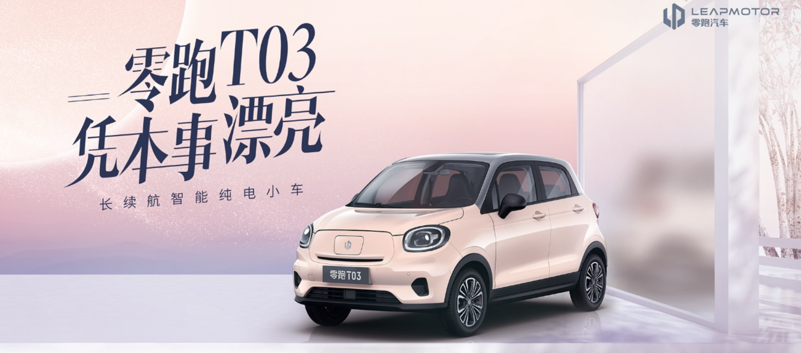
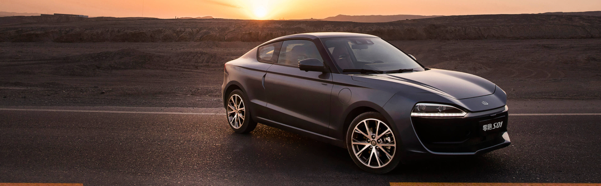

With the increase of the management of the production qualification of new energy vehicles in recent years, it is not easy to get the production qualification. Many new forces of vehicle manufacturing have chosen OEM production in order to make rapid mass production. However, in the long run, for auto enterprises, having production qualification and self built factories means that they can strictly control production quality and production cost, which is also the reason why new forces are making great efforts to obtain "birth certificate".
On April 30, 2021, the Ministry of industry and information technology issued the 343rd batch of announcement on road motor vehicle manufacturers and products. Zero run vehicle (hereinafter referred to as "Zero run") was issued in this batch of announcement as a licensed vehicle manufacturer, which marked that Zero run passed the approval and obtained the production qualification of new energy vehicles, The name of its vehicle production enterprise has also been changed from "Changjiang automobile" to "zero running automobile".
As a technician, Zhu Jiangming, founder, chairman and CEO of Zero run technology, made the bold statement of "catching up with Tesla in the field of automatic driving technology within three years". Different from other car brands, Zero run is one of the few manufacturers with complete automobile R & D links, from three electricity, chips to industrial accessories.
For such a layout, Zhu Jiangming's confidence comes from the accumulation of technology in the past. In 1992, Zhu Jiangming founded Dahua Co., Ltd. and gradually grew into a leading enterprise in the field of security after decades of development. The products have gradually expanded from the initial communication scheduling to remote image monitoring, embedded hard disk video recorder and so on. The technical fields involved in these products, such as front-end sensors, cameras, background servers, etc., can also be reused in automobiles. Zhu Jiangming said frankly: "although cars include controllers, meters, lights, BMS (battery management system), they add up to only a dozen things, not as many as expected." In addition, Zhu Jiangming also said that he would not touch some things in the traditional automotive field, such as suspension, interior trim and seats. They developed more parts related to the electronic field.
Non internet man-made vehicle
In the ranks of new forces in car making, the attribute of the founder determines the overall attribute of the brand. If the founder of vertical media can play marketing, then the technical founder has a certain "obsession" in technology. This is particularly evident in Zhu Jiangming.
Technological entrepreneurship has been started since the 1990s, and the R & D of security equipment in industrial, civil and commercial fields has been completed in only four factories. This experience made him almost paranoid self-confidence in technology research. Not only self-developed the underlying facilities such as batteries and chips, but also studied the intelligent driving solutions and intelligent cockpit. Nowadays, even on the T03 mini car, it can realize face recognition, driving function adaptation, voice interaction and other functions, which is difficult to imagine in traditional cars.

For this reason, the Zero run car building strategy was different from other new car building forces from the beginning. Most other manufacturers only focus on the same type of vehicle. For example, Xiaopeng focuses on compact SUVs and sedans, Weilai focuses on medium and large SUVs, and ideal focuses on family cars. The positioning of zero running is not the case. It hopes to cover all models from the beginning. Not only that, but also the high configuration of each model. Since the launch of the first sedan model S01 in 2019, Zero run has launched the mini car C11. In the next three to five years, car C01, compact SUV a11, medium and large MPV and other models will be launched one after another. At the same time, in addition to the pure electric version, some models will also launch the extended range version of oil electric hybrid.
Having talked about this, I can't help but think whether such a strategy seems too "ambitious". Is it a little less focused to speak frankly about such a layout? You know, even Tesla has only launched roadster, model s, model x, model 3 and model y since its inception.
In the face of such doubts, Zhu Jiangming frankly said that the main reason for this layout is that the positioning of Zero run is different from other new forces. Other new forces are more like Internet companies, while Zero run hopes to be a "big manufacturer" covering all models like Toyota and Volkswagen. In addition, he also believes that the model and hybrid mode are not invariable. After the launch, it should also be adjusted in time according to the real reflection of the market.
"I love chips very much"
Zhu Jiangming's dedication to self research can be seen from the two parts of chip and battery.
As early as 2014, Zhu Jiangming started the research and development of chips, focusing on SoC system level chips from the very beginning. The first car chip they launched is Lingxin 01. This is a 28 nm highly integrated SOC with a computing power of 4T. At the beginning of the design, Zhu Jiangming positioned it to realize L2 ~ L3 level automatic driving.

As for why we should develop our own chips, Zhu Jiangming said that around 2017 and 2018, only Mobileye is a mature brand of vehicle chips, but Mobileye is a packaged sales, packaging computing power and algorithms, and then outputting a result to you. The result of the first mock exam is that "for domestic auto makers, the level of Mobileye represents your level, and there is no possibility of any change". Therefore, Zhu Jiangming led the team to complete the research and development of this chip in two years. For its evaluation, Zhu Jiangming said: "compared with NVIDIA, there is still a certain gap, but the characteristic market still has certain advantages.
Zhu Jiangming has a very positive attitude towards the development of chips. Today, there are also a number of excellent chip enterprises in China, such as Huawei, horizon, black sesame, etc. However, for domestic chip enterprises, the road of self research still faces many challenges. It mainly includes the following aspects:
1.Large capacity consumption. A new energy vehicle needs the capacity consumption of five traditional vehicles (that is, the number of chips). At present, the objective number of new energy vehicles in the world is about 4 million, which is equivalent to the capacity consumption of 20 million traditional vehicles.
2.High safety requirements. Due to the long cycle of safety certification and other aspects of vehicle specification chips, it is difficult to replace them with other chips for the time being. In addition, the production capacity of domestic chip manufacturers can not keep up, so the automotive industry will be in a state of lack of chips for at least 2-3 years.
3.There is still a gap with the industry. Qualcomm and NVIDIA chip manufacturers are strong enough to have a team specializing in ADAS (advanced driving assistance system) to increase their computing power, and they can already produce chips to meet high-end automatic driving, and then transition to L2. Therefore, the space left for Chinese enterprises is very limited.
Despite the challenges, Zhu Jiangming said bluntly: "I love chips very much." It is precisely because more and more people love chips that China's chip industry will narrow the gap with foreign countries step by step and finally get rid of the current situation of "neck sticking".
In addition, the battery is different from the structure of separating the battery from the body of other manufacturers. Zero run has designed the technology of integrated installation of chassis, body, battery and cell (CBC: cell body chassis). The advantage of this design is that the lower box of the battery pack and the body chassis can be calculated together when calculating the strength of the car, The safety of the whole vehicle is improved. In addition, the overall structure stamped with a whole steel plate is also better than the welding of aluminum alloys in the past, and a lot of costs are saved at the same time.
In addition to chips and batteries, the hardware such as sensors, cameras and millimeter wave radar in the periphery of the car are also gradually being made in China“ I hope to adopt chip level national production in the sensor and controller in the field of ADAS. At present, all the 11 cameras, 5 millimeter wave radars, 4 angle radars and a front radar included in C11 have been localized. "
Vision based automatic driving will become the mainstream
In the current automatic driving technology, multi-sensor fusion and machine vision are the mainstream solutions, but if automatic driving wants to move towards L3 level, they need to meet the following preconditions:
1.Multisensor fusion. It needs to cooperate with better high-precision map, higher precision lidar or millimeter wave radar.
2.Machine vision. Based on machine vision and assisted by other functions, play a cooperative war.
Zhu Jiangming believes that the automatic driving solution based on machine vision is better than multi-sensor fusion. At present, the misjudgment rate of millimeter wave sensor is high, which is not enough to be used as the benchmark of automatic driving. Even if the sensitivity is continuously optimized, there is a problem of "better not to act than to Misact". Unless the lidar can be guaranteed forever, it is difficult to move forward. However, if lidar is always correct, machine vision and millimeter wave radar are not required, so there is a certain paradox in the solution of multi-sensor fusion.
Nowadays, urban roads are very complex. When high-definition maps can not be drawn, they can only rely on visual system and sensor system. At the same time, the scheme using pure vision will also have higher requirements for computing power, which will promote the computing platform to move forward quickly. Moreover, the vision based solution needs enough cases for training, so that its accuracy can approach the real security infinitely.
To realize these technologies, we need to rely on the joint efforts of the industry. So, which talents are the most scarce at present?
In this regard, Zhu Jiangming believes that the talent structure of the whole industry has not been fully formed, but it must be comprehensive talents, rather than talents who only do software and hardware or traditional cars, which have more advantages. And there must be "soul figures" in the enterprise. For example, the most senior product architect, then the core group leader of vehicle computer networking, intelligent driving and vehicle control, and finally the detailed division of labor. Zhu Jiangming also added that now neither new forces of car making nor traditional car enterprises are mainstream players. The product and talent structure are in the stage of updating and improvement. At least it will take shape after 2025, when talents can flow in new energy vehicle enterprises.
Appsupport for Linux platforms can provide independent compatibility with Android applications for the Linux platform, and users do not need to obtain a complete sailfish OS license, which is the latest research and development direction of Jolla company.
Jolla said that appsupport has attracted "strong" interest from some automobile companies in the early stage of its establishment, and these automobile companies are also looking for solutions for some on-board infotainment systems, The companies pointed out that "the digital cockpit is the key difference between cars - it is also an important strategic part that can enable carmakers to open the gap and control market dominance."
In this regard, pienim ä ki said: "it can be said that the automotive field has developed rapidly in the past few years. Innovators like Tesla have really shocked the whole industry. Therefore, traditional suppliers need to think about their user experience methods and types in different ways and provide different user experiences in the cockpit."
At present, appsupport can provide an embedded Linux compatible platform used by the system that can run Android applications without selecting the on-board solution provided by Google. Based on this, Jolla also provides users with an alternative to "go to Google".
In addition, the embedded Linux system can also run in many other places and meet a wider range of needs. For example, the software can enable Internet of things devices to run very mainstream applications.
Sami pienim ä Ki, co-founder and CEO of Jolla, said, "Jolla did a good job. I'm glad to see Jolla officially turn loss into profit last year. From 2019 to 2020, our revenue increased by more than 50% and our revenue was € 5.4 million. At the same time, the cost base of operation has been quite stable, so these sums have brought good profitability. "
Is there an opportunity for traditional operating system manufacturers to rely on smart cars?
If sailfish OS has been running Android for ten years, and has finally explored its own way of operation at present, and wants to fully enter the automotive field in the digital transformation in the next step, the experience of an elder is also worth learning.
According to foreign media reports, as a pioneer of smart phones, the news that "BlackBerry is dead" has been heard by the public countless times. However, after its low-key transformation into a software and service provider, after several years of hard work, BlackBerry has become a pioneer in the field of smart cars, and its software technology has been installed in nearly 200 million cars.
BlackBerry QNX provides support to many automobile manufacturers such as ampford, BMW, Bosch, Ford, GM, Honda, Mercedes Benz, Toyota and Volkswagen. The cooperation fields include advanced driving assistance system, digital cockpit and data security gateway. BlackBerry's QNX software can track real-time data of Google maps, GPS navigation, traffic monitoring and infotainment systems, which has been embedded in millions of cars on the road.
Not long ago, blackberry and Amazon jointly established the BlackBerry Ivy, a vehicle data integration and monitoring cloud platform, which is used to improve vehicle safety technology, accelerate the development of autopilot, and even give warning by collecting real-time data and aiming at the dangers of some roads.
Today, QNX has been installed in 195 million vehicles, which is almost 100 times the number of Tesla vehicles. Relying on automatic driving, blackberry undoubtedly occupies this great advantage.
Jolla's appsupport is also the underlying software support. We will look forward to whether it will lead the company to a new level.